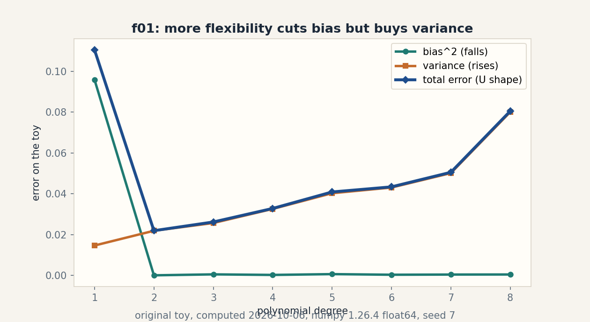
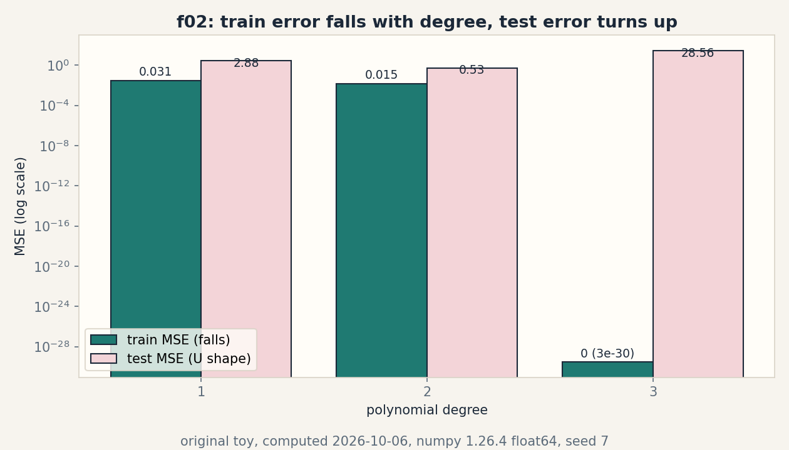
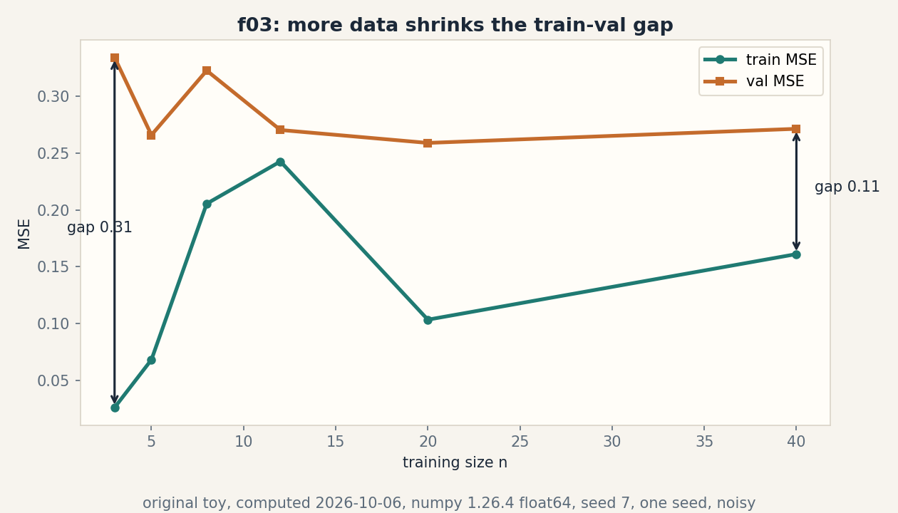
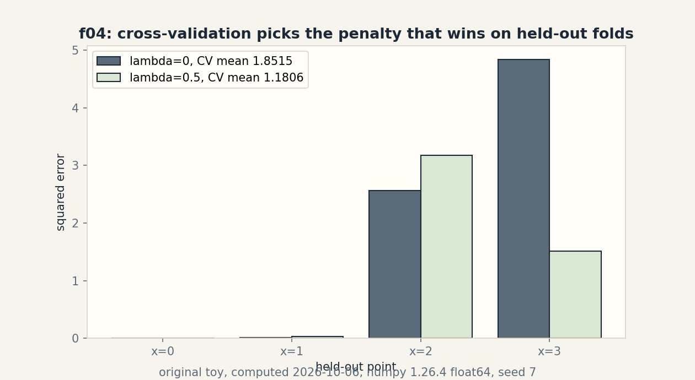

U05 · Risk, regularization, and generalization
Lesson 05, Risk, regularization, and generalization
Unit: math-ml-U05. Leaf concepts: math-ml-U05-C01 to C12. Date: 2026-10-06. Baseline: October 6, 2026.
Source mapping
This lesson is locally authored prerequisite bridge content for the prerequisite modules P07 (statistical estimation and uncertainty), P09 (optimization and constrained problems), and P10 (ML foundations and evaluation). It does not claim to reproduce the instructor’s lectures. Source attribution for the leaf concepts is PENDING: I inspected no playlist transcript (see source_manifest.md SRC-04, source_gaps.md G2). The playlist titles that name this unit’s topics are “Lec 15 Risk Minimization Framework”, “Lec 31 Bias-Variance Decomposition and Analysis”, “Lec 32 Bias and Variance in Practice”, “Lec 33 Regularization”, “Lec 34 Regularized ERM and MAP Estimate”, “Lec 35 Stochastic Gradient Descent as a Regularizer”, “Lec 59 Cross Validation”, and “Tutorial 3 Risk Minimization Framework”. Titles name topics. They do not name leaf items, definitions, or numbers. All numbers below are computed 2026-10-06, numpy 1.26.4, float64, CPython. Random draws use numpy default_rng(7).
Scope and objectives
Scope: the risk we want against the risk we can measure, loss selection, the assumptions behind consistency, bias and variance, penalties, priors as penalties, train/test splits, cross-validation, capacity, learning curves, leakage, and distribution shift.
Objectives: after this lesson the learner can write the empirical and population risk of a toy classifier, choose a loss and defend the choice, state the assumptions that make ERM consistent, decompose one MSE into bias squared plus variance, run ridge and MAP on a toy and show their equivalence, split data and run k-fold CV without leakage, read capacity and learning curves, name three leak channels, and quantify one covariate shift.
Dependencies: prerequisites.md R35-R44. U01 notation. U03 gradients. U04 likelihood, MLE, MAP, expectation.
How to read this lesson
Each section follows one chain. A concrete question opens. A toy from zero follows. One rule is applied. A computed example uses the same objects. Code, checks, costs, alternatives, and a failure case close. Shell numbers (0-10) mark the Russian-doll ladder position of each step. Figures carry one claim each. The audit table lives in visual_audit.md.
C01, empirical and population risk
Motivating question: you score a classifier on the data you have. What score would it get on the data you have not seen?
Start from zero. Four points: x = [0, 1, 2, 3], y = [0, 0, 1, 1]. Take the rule h: predict 1 when x >= 2.5, else 0. Predictions are [0, 0, 0, 1]. Only x = 2 is wrong (truth 1, prediction 0). One error in four. The empirical risk is 0.25. That number is measured. It is not a claim about the future.
Mental model. The empirical risk is the scoreboard after the game you played. The population risk is the scoreboard you would get if you played forever. The first is a number from your sample. The second is an expectation over the true distribution. ERM, empirical risk minimization, picks the rule with the best scoreboard from the sample. Shell 2.
Variables. R(h) is the population risk: E[l(y, h(x))]. R_hat(h) is the empirical risk: (1/n) sum_i l(y_i, h(x_i)). l is the loss. n = 4 in the toy. Shapes: scalars in, scalars out. Assumptions: the sample is IID from the population, and l is fixed before you look at the data.
Why it exists. Training minimizes R_hat. Deployment pays R. The whole unit is the gap between them. Remove the distinction and every leaderboard becomes a promise.
Computed example, same objects. 0-1 loss. R_hat(h) = 0.25, computed 2026-10-06. Now fix the population: x uniform on [0, 4], y = 1 when x >= 1.5 else 0. The rule h is wrong exactly on x in [1.5, 2.5), a set of measure 1 out of 4. R(h) = 0.25. Here the two agree. They agree by luck of the toy, not by law. C07 breaks the luck.
Figure f01 is not this section’s. C01 carries its state in the two numbers 0.25 and 0.25 and the sentence that they need not agree.
Implementation.
x = [0, 1, 2, 3]
y = [0, 0, 1, 1]
pred = [1 if v >= 2.5 else 0 for v in x]
R_hat = sum(p != t for p, t in zip(pred, y)) / len(y)
print(R_hat) # 0.25
Correctness check. Hand count: only index 2 disagrees. 1/4 = 0.25. The code prints 0.25. Expected output: 0.25.
Costs. One R_hat evaluation costs n loss evaluations. For the toy, 4. Nearest alternative: the population risk cannot be computed from data alone. You estimate it with held-out data (C07) or CV (C08). Selection boundary: use R_hat to pick among rules. Use held-out estimates to report how the pick will do.
Failure case. Pick h to minimize R_hat over a rich rule set and R_hat falls to 0 while R stays high. That pattern is overfit, and C09 studies it. Counterexample: a lookup table that memorizes the four points has R_hat = 0 and R = 0.5 on this toy population (it guesses wrong on half of [0,4]). The scoreboard lied.
Ladder shells used: 0 (question), 1 (toy), 2 (definitions), 3 (ERM rule), 5 (hand count versus code), 7 (memorizer counterexample).
Assessment. See exercises E01-E03 and ladder L01. Keys in lessons/u05/keys.md.
C02, loss selection
Motivating question: three losses rank the same constant predictor differently. Which ranking do you trust?
Start from zero. Labels y = [0, 1, 1]. Predict one constant c. Squared loss picks c = 2/3, the mean, with risk 2/9 = 0.2222. 0-1 loss with a majority rule picks 1, with risk 1/3 = 0.3333. Absolute loss picks c = 1, the median, with risk 1/3 = 0.3333. Log loss at p = 2/3 gives 0.6365. Four numbers, one dataset, no universal winner.
Mental model. A loss is the price list you hand to the optimizer. Squared loss prices large errors quadratically and buys the mean. Absolute loss prices all errors linearly and buys the median. 0-1 loss prices only the verdict and buys the majority class. The loss chooses the statistic before any data arrives. Shell 2.
Variables. l(y, y_hat) maps a truth and a prediction to a price, units of the loss. For squared loss the units are squared target units. Assumptions: the loss is fixed before training, matches the decision you will make, and its minimizer is the statistic you want.
Why it exists. “Accuracy” and “MSE” are not the same request. Train on one, report the other, and you optimized a proxy of a proxy. The loss must match the deployment decision or the deployment metric punishes you.
Computed example, same objects. Values computed 2026-10-06:
| loss | best constant | risk |
|---|---|---|
| squared | 2/3 | 0.2222 |
| 0-1 (majority rule) | 1 | 0.3333 |
| absolute | 1 | 0.3333 |
| log loss at p = 2/3 | 2/3 | 0.6365 |
Figure: the table is the figure. It carries one claim: the loss chooses the optimum. Source: original toy.
Implementation.
y = [0., 1., 1.]
c = sum(y) / len(y) # 0.6667
risk_sq = sum((v - c) ** 2 for v in y) / 3
print(c, risk_sq) # 0.6666666666666666 0.22222222222222224
Correctness check. Hand: (4/9 + 1/9 + 1/9)/3 = 6/27 = 2/9. The code prints 0.2222. Expected output: 0.6667, 0.2222.
Costs. Evaluating one loss on n points costs O(n). Nearest alternative: a surrogate loss (hinge, logistic) replaces a non-smooth 0-1 loss so gradients exist. Selection boundary: use the deployment loss when it is smooth enough to optimize. Use a surrogate when it is not, and report the true loss on held-out data.
Failure case. Optimizing squared loss for a classification task punishes confident correct answers: a prediction of 3 for label 1 pays (3-1)^2 = 4 though the class is right. Counterexample: on y = [0, 1, 1] the squared-loss constant 2/3 is not a legal class label at all. The loss must match the output space.
Ladder shells used: 0 (question), 1 (toy), 2 (definitions), 3 (the price-list rule), 5 (hand 2/9 versus code), 7 (wrong-output-space counterexample).
Assessment. See exercises E04-E06 and ladder L02. Keys in lessons/u05/keys.md.
C03, statistical consistency assumptions
Motivating question: when does more data actually buy a better estimate?
Start from zero. Estimate a coin bias p = 0.7 with the sample mean of n = 4 flips. If the flips are IID, the mean squared error is p(1-p)/n = 0.0525. If the four flips are perfect copies of one flip (total dependence), the “sample” of 4 carries one flip of information and the MSE is p(1-p) = 0.21. Same n, four times the error. The assumptions, not n, did the work.
Mental model. Consistency is a contract: IID sampling, a fixed estimator, and n going to infinity together promise that the estimate lands on the truth. Break IID and the contract is void. The estimator still runs. It just estimates the wrong thing, or nothing. Shell 2.
Variables. theta_hat_n is the estimate from n points. theta is the truth. MSE = E[(theta_hat_n - theta)^2]. Assumptions: IID draws from a fixed distribution, the estimator is a fixed function of the data, and the limit n -> infinity is taken with everything else frozen.
Why it exists. Every “more data helps” claim in ML rests on this contract. Time series, user data with feedback loops, and curated benchmarks all break IID in ways the toy shows.
Computed example, same objects. p = 0.7, n = 4. IID MSE = 0.0525. Dependent MSE = 0.21. Ratio 4.0, exactly the information loss. Computed 2026-10-06.
Implementation.
p, n = 0.7, 4
mse_iid = p * (1 - p) / n
mse_dep = p * (1 - p)
print(mse_iid, mse_dep) # 0.0525 0.21
Correctness check. p(1-p) = 0.21. Divide by 4: 0.0525. Both match the formulas. Expected output: 0.0525 0.21.
Costs. The check costs O(1). Nearest alternative: ergodic or mixing assumptions replace IID for time series, with slower rates. Selection boundary: IID math applies to shuffled batches from a fixed pool. It does not apply to streams with drift or feedback.
Failure case. Train on users, deploy to users, let the model change user behavior, retrain on the new behavior. The distribution moves with the model. The contract’s “fixed distribution” clause fails. Counterexample: the toy’s perfect-copy flips. n = 4, information = 1. More rows, same ignorance.
Ladder shells used: 0 (question), 1 (toy), 2 (definitions), 3 (the contract), 5 (0.0525 versus 0.21), 7 (feedback-loop counterexample).
Assessment. See exercises E07-E08 and ladder L03. Keys in lessons/u05/keys.md.
C04, bias and variance
Motivating question: a biased estimator beats the unbiased MLE on a tiny sample. How?
Start from zero. True coin bias p = 0.7. From n = 4 flips the MLE p_hat = k/4 has MSE 0.0525. The Laplace estimator p_tilde = (k+1)/(n+2) has bias -0.0667, variance 0.02333, and MSE 0.02778. The biased one wins by almost a factor of two. Bias is not a sin. Unnecessary variance is the tax.
Mental model. MSE splits into three honest parts: bias squared (how far the average estimate sits from truth), variance (how much the estimate wobbles across datasets), and irreducible noise (what no estimator removes). Shrinking the estimate toward a prior trades a little bias for a lot less wobble. Shell 2.
Variables. bias = E[theta_hat] - theta. var = E[(theta_hat - E[theta_hat])^2]. MSE = bias^2 + var. All dimensionless here. Assumptions: the expectation is over repeated datasets from the same distribution. The decomposition needs squared error.
Why it exists. “Unbiased” sounds virtuous and is often the wrong goal. Model selection is MSE selection, and MSE has two knobs. Regularization (C05) turns the bias knob on purpose.
Computed example, same objects. k = 3, n = 4, p = 0.7:
| estimator | bias | variance | MSE |
|---|---|---|---|
| MLE k/n | 0 | 0.05250 | 0.05250 |
| Laplace (k+1)/(n+2) | -0.06667 | 0.02333 | 0.02778 |
bias^2 + var = 0.00444 + 0.02333 = 0.02778. The split adds up. Computed 2026-10-06.
Figure f01 (PNG assets/u05/f01_bias_variance.png). Polynomial fits of degree 1 to 8 on a noisy quadratic, 100 resamples, seed 7. Bias squared falls from 0.0958 to ~0. Total error makes a U with minimum 0.0219 at degree 2. One claim: flexibility trades bias for variance. Source: original toy, computed 2026-10-06.
Implementation.
p, n, k = 0.7, 4, 3
bias = (n * p + 1) / (n + 2) - p
var = n * p * (1 - p) / (n + 2) ** 2
print(bias, var, bias ** 2 + var) # -0.0667 0.02333 0.02778
Correctness check. (np+1)/(n+2) = 3.8/6 = 0.6333. Minus 0.7 gives -0.0667. Variance: 4*0.21/36 = 0.02333. Sum: 0.02778. Expected output: -0.0667 0.02333 0.02778.
Costs. The split costs O(1) given the estimator’s moments. Nearest alternative: the bootstrap estimates variance from one dataset by resampling. Selection boundary: use the analytic split when the estimator’s moments are known. Use the bootstrap when they are not.
Failure case. The split needs squared error and an expectation over datasets. For 0-1 loss there is no clean additive split, and “bias” of a classifier needs a different definition. Counterexample: a constant classifier has zero variance and large bias, but its 0-1 error does not equal bias^2 + var + noise. The decomposition is a squared-error tool.
Ladder shells used: 0 (question), 1 (toy), 2 (definitions), 3 (the split), 5 (0.02778 versus 0.0525), 7 (0-1 loss counterexample).
Assessment. See exercises E09-E11 and ladder L04. Keys in lessons/u05/keys.md.
C05, penalties
Motivating question: the data wants a big slope. You want a small one. Who wins, and by how much?
Start from zero. Points x = [0, 1, 2, 3], y = [0, 1, 3, 2]. Fit y = w x. Plain least squares: w = 13/14 = 0.9286, RSS = 1.9286. Add the penalty nlambdaw^2 with n*lambda = 2: w = 13/16 = 0.8125. The in-sample RSS rises to 2.1172. The penalty pays 1.3203. Total objective 3.4375, below the 3.6531 the unpenalized w scores under the penalized objective. The penalty moved the answer and the math confirms the move.
Mental model. A penalty is a tax on bigness. The optimizer now buys fit with taxed money, so it buys less fit and smaller weights. The tax rate is lambda. Lambda = 0 is the old problem. Lambda large enough pins w at 0. Shell 2.
Variables. J(w) = sum_i (y_i - w x_i)^2 + n lambda w^2. w is the slope. lambda >= 0 is the tax rate. Shapes: scalars. Assumptions: the penalty is added to the training objective, not to the evaluation metric. The minimizer has a closed form here because the model is linear in w.
Why it exists. Small data plus flexible models equals wild weights (C04 variance). The penalty buys variance reduction with bias money. Without it, high-dimensional fits memorize noise.
Computed example, same objects. Computed 2026-10-06:
| quantity | lambda = 0 | n lambda = 2 |
|---|---|---|
| w* | 0.928571 | 0.812500 |
| RSS | 1.928571 | 2.117188 |
| penalty | 0 | 1.320313 |
| penalized objective | 3.653061 | 3.437500 |
Figure: the table is the figure. One claim: the penalty shrinks w and raises the raw RSS. Source: original toy.
Implementation.
x = [0., 1., 2., 3.]
y = [0., 1., 3., 2.]
Sxx = sum(v * v for v in x)
Sxy = sum(a * b for a, b in zip(x, y))
w_ols = Sxy / Sxx
w_r = Sxy / (Sxx + 2.0)
print(w_ols, w_r) # 0.9285714285714286 0.8125
Correctness check. Sxx = 14, Sxy = 13. 13/14 = 0.928571. 13/16 = 0.8125. Expected output: 0.9285714285714286 0.8125.
Costs. Closed form costs O(n). Gradient descent on the penalized objective costs O(n) per step. Nearest alternative: constrain the norm instead of taxing it (||w|| <= t). The constrained form and the penalized form match at the right t, by Lagrangian duality (U03 C09-C10). Selection boundary: use the penalty when you want a smooth knob. Use the hard constraint when you have a real budget on the norm.
Failure case. Penalize the wrong scale and the tax misfires: if one feature is in millimeters and another in meters, the same lambda taxes them unequally. Counterexample: standardize first, or the penalty punishes units, not weights. Also: a penalty cannot fix a broken model family. It shrinks weights. It does not add the missing feature.
Ladder shells used: 0 (question), 1 (toy), 2 (definitions), 3 (the tax rule), 5 (13/14 versus 13/16), 7 (units counterexample).
Assessment. See exercises E12-E14 and ladder L05. Keys in lessons/u05/keys.md.
C06, priors
Motivating question: what does a Bayesian prior do to the same toy?
Start from zero. Same points, same line y = w x. Put a Gaussian prior w ~ N(0, 0.5) and Gaussian noise with variance 1. The MAP slope is w = 13/(14 + 1/0.5) = 13/16 = 0.8125. Exactly the ridge answer from C05 with n lambda = 2. The prior and the penalty are the same move in two languages. lambda = sigma^2/(n tau^2) = 0.5.
Mental model. A prior is a belief about w before the data. MAP maximizes belief times fit. A tight prior (small tau^2) is a strong belief that w is near 0, and the maximizer pays for straying. The log prior is the penalty. Choose the prior, choose the penalty. Shell 2.
Variables. tau^2 is the prior variance. sigma^2 is the noise variance. w_MAP = Sxy/(Sxx + sigma^2/tau^2). Assumptions: Gaussian prior, Gaussian noise, known variances. The equivalence is exact only under these.
Why it exists. “Regularization” sounds like a hack. The Bayesian reading says it is a stated assumption about the world: small weights are a priori more likely. Write the prior down and the hack becomes a model choice you can argue about.
Computed example, same objects. tau^2 = 0.5, sigma^2 = 1. sigma^2/tau^2 = 2. w_MAP = 13/16 = 0.8125. lambda_equiv = 0.5. Computed 2026-10-06. The numbers match C05 to all digits.
Implementation.
Sxx, Sxy = 14.0, 13.0
tau2, sig2 = 0.5, 1.0
w_map = Sxy / (Sxx + sig2 / tau2)
print(w_map) # 0.8125
Correctness check. 1/0.5 = 2. 13/(14+2) = 0.8125. Matches the C05 ridge w. Expected output: 0.8125.
Costs. Same as C05. Nearest alternative: full posterior inference (samples, credible intervals) instead of the MAP point. Selection boundary: use MAP when you need one answer fast. Use the full posterior when you need uncertainty about w.
Failure case. A prior that contradicts the data still bends the answer: tau^2 = 0.001 pins w near 0 no matter what the points say. Counterexample: the “prior” is a modeling choice with consequences. A bad prior is not neutral. It is a strong wrong belief.
Ladder shells used: 0 (question), 1 (toy), 2 (definitions), 3 (log prior as penalty), 5 (0.8125 both ways), 7 (overconfident prior counterexample).
Assessment. See exercises E15-E16 and ladder L06. Keys in lessons/u05/keys.md.
C07, train and test splits
Motivating question: how do you estimate the population risk without knowing the population?
Start from zero. Train the line y = w x on x = [0, 1, 2, 3], y = [0, 1, 3, 2]. w = 0.9286, train MSE = 0.4821. Lock the model. Evaluate on two fresh points x = [4, 5], y = [4.8, 3.9]. Test MSE = 0.8653. The test number is the honest estimate. The train number is the optimistic one. The gap is 0.3832.
Mental model. Split the data before you fit. Train on one part, score on the other. The test part acts as a stand-in for the future, because the model never saw it. Touch the test set during fitting and the stand-in is corrupted. That corruption has a name: leakage (C11). Shell 2.
Variables. Train set, test set. Sizes n_train = 4, n_test = 2 here. The split fraction is a choice, commonly 80/20. Assumptions: both parts come from the same distribution (no shift, see C12), and the test part is used once.
Why it exists. R_hat on the training data is the number the optimizer gamed. You need a number it did not game. The split is the cheapest such number.
Computed example, same objects. Computed 2026-10-06:
| set | points | MSE |
|---|---|---|
| train | [0,1,2,3] | 0.482143 |
| test | [4,5] | 0.865306 |
Figure: the table is the figure. One claim: the locked model scores worse on unseen points. Source: original toy.
Implementation.
w = 13 / 14
xt, yt = [4., 5.], [4.8, 3.9]
test_mse = sum((b - w * a) ** 2 for a, b in zip(xt, yt)) / 2
print(test_mse) # 0.8653061224489795
Correctness check. w4 = 3.7143, residual 1.0857, square 1.1788. w5 = 4.6429, residual -0.7429, square 0.5518. Mean: 0.8653. Expected output: 0.8653061224489795.
Costs. One extra evaluation pass: O(n_test). Nearest alternative: cross-validation (C08) reuses all points as test points in turn. Selection boundary: use one split when data is plentiful. Use CV when every point is precious.
Failure case. Test on the training distribution while deploying on another: the split is honest about the wrong future. Counterexample: train and test both from x in [0, 3], deploy at x in [10, 12]. The test MSE says 0.48. Deployment pays far more. That is C12.
Ladder shells used: 0 (question), 1 (toy), 2 (definitions), 3 (lock then score), 5 (hand 0.8653 versus code), 7 (wrong-future counterexample).
Assessment. See exercises E17-E18 and ladder L07. Keys in lessons/u05/keys.md.
C08, cross-validation
Motivating question: with four points, can you afford to throw two away for a test set?
Start from zero. Same line toy. Leave-one-out CV: fit on three points, score the held-out one, repeat four times, average. With n lambda = 0 the fold errors are [0.0, 0.0059, 2.56, 4.84], mean 1.8515. With n lambda = 2 they are [0.0, 0.0297, 3.1777, 1.5148], mean 1.1806. CV picks lambda = 0.5. The penalty wins on points it did not train on.
Mental model. CV is the split idea run in a circle: every point gets one turn as the test stand-in. k-fold splits into k parts and rotates. Leave-one-out is k = n. The average is the honest score, and it uses all n points. Shell 2.
Variables. k folds. Fold error e_j. CV score = (1/k) sum_j e_j. Assumptions: folds are exchangeable draws (IID again). The model selection must happen inside the CV loop: selecting on the full data first and CV-ing after is leakage.
Why it exists. One split wastes data and its answer wobbles with the split seed. CV spends compute to buy stability: every point contributes to both fitting and honest scoring.
Computed example, same objects. Computed 2026-10-06. The penalty is scaled with the fold size so lambda means the same thing on 3 points as on 4.
| held-out x | lambda = 0 | n lambda = 2 |
|---|---|---|
| 0 | 0.0000 | 0.0000 |
| 1 | 0.0059 | 0.0297 |
| 2 | 2.5600 | 3.1777 |
| 3 | 4.8400 | 1.5148 |
| CV mean | 1.8515 | 1.1806 |
Figure f04 (PNG assets/u05/f04_cv_folds.png). Grouped bars of the eight fold errors with the two CV means in the legend. One claim: the penalty loses two folds and wins the average. Source: original toy, computed 2026-10-06.
Implementation.
def loocv(nl):
x = [0., 1., 2., 3.]
y = [0., 1., 3., 2.]
errs = []
for i in range(4):
xs = x[:i] + x[i+1:]
ys = y[:i] + y[i+1:]
Sxx = sum(v * v for v in xs)
Sxy = sum(a * b for a, b in zip(xs, ys))
w = Sxy / (Sxx + 0.75 * nl)
errs.append((y[i] - w * x[i]) ** 2)
return sum(errs) / 4
print(loocv(0.0), loocv(2.0)) # 1.8514792899408277 1.180553294318837
Correctness check. The fold errors match the table above to 4 digits. The 0.75 factor rescales n lambda = 2 from 4 points to 3. Expected output: 1.8514792899408277 1.180553294318837.
Costs. k fits instead of one. LOOCV on n points costs n fits. Nearest alternative: a single split (C07) costs one fit but wastes data. Selection boundary: use CV when n is small or the selection must be stable. Use one split when fits are expensive.
Failure case. Tune on the CV score, then report the best CV score as the final number: the score is now gamed, optimistic again. Counterexample: try 100 lambdas, pick the best CV mean, report it. That number needs its own held-out check. This is selection bias, and nested CV exists to fix it.
Ladder shells used: 0 (question), 1 (toy), 2 (definitions), 3 (the rotation rule), 5 (table versus code), 7 (tune-then-report counterexample).
Assessment. See exercises E19-E21 and ladder L08. Keys in lessons/u05/keys.md.
C09, capacity
Motivating question: at what point does a more flexible model stop helping?
Start from zero. Points x = [0, 1, 2, 3], y = [0.1, 1.9, 2.9, 4.2]. Fit polynomials of degree 1, 2, 3 with intercept. Train MSE: 0.03075, 0.01513, 0.00000. The degree-3 fit has 4 parameters for 4 points: it interpolates exactly. Test on x = [4, 5], y = [4.05, 5.1]: test MSE 2.8757, 0.5313, 28.5613. Train error falls. Test error falls then explodes. The turn is the capacity lesson.
Mental model. Capacity is how many different functions the model class can express. More capacity bends closer to the training points. Past the truth’s complexity, the extra bend fits noise, and noise does not repeat at test time. The test curve is a U. The bottom of the U is the capacity you want. Shell 2.
Variables. Degree d. Parameter count d+1. Train MSE, test MSE. Assumptions: the test points come from the same distribution as the train points. The U needs that. Without it you get C12 instead.
Why it exists. “Bigger model” is not “better model”. Capacity is the knob that trades bias against variance (C04) on real data, and the test curve is how you find its setting.
Computed example, same objects. Computed 2026-10-06:
| degree | params | train MSE | test MSE |
|---|---|---|---|
| 1 | 2 | 0.03075 | 2.87570 |
| 2 | 3 | 0.01513 | 0.53133 |
| 3 | 4 | 0.00000 | 28.56125 |
Figure f02 (PNG assets/u05/f02_capacity_gap.png). Log-scale bars. Train falls monotonically. Test makes the U with minimum at degree 2. One claim: capacity past the truth hurts. Source: original toy, computed 2026-10-06.
Implementation.
import numpy as np
xc = [0., 1., 2., 3.]
yc = [0.1, 1.9, 2.9, 4.2]
c = np.polyfit(xc, yc, 3)
tr = np.mean((np.array(yc) - np.polyval(c, xc)) ** 2)
print(tr) # 3.0708952963254476e-30
Correctness check. 4 points, 4 parameters: exact interpolation up to float noise. 3.07e-30 is 0 for all practical purposes. Expected output: 3.0708952963254476e-30.
Costs. Fitting degree d on n points costs O(n d^2). Nearest alternative: control capacity with a penalty (C05) instead of the degree. Selection boundary: use degree when the family is naturally ordered. Use penalties when you want a continuous knob.
Failure case. More capacity with more data is fine: the U bottom moves right as n grows. Counterexample: n = 4 here. With n = 400 the degree-3 fit would be harmless. Capacity is relative to data, not absolute.
Ladder shells used: 0 (question), 1 (toy), 2 (definitions), 3 (the U rule), 5 (3.07e-30 interpolation check), 7 (large-n counterexample).
Assessment. See exercises E22-E24 and ladder L09. Keys in lessons/u05/keys.md.
C10, learning curves
Motivating question: will more data fix this model, or is the model the problem?
Start from zero. True line y = x with noise sigma = 0.5. Fit y = w x, seed 7. Train and validation MSE at n = 3: 0.0259 and 0.3343, gap 0.3084. At n = 40: 0.1611 and 0.2714, gap 0.1104. Train error rises (the model cannot fit every point). Validation error settles near the noise floor. The gap shrinks. More data helps exactly this kind of problem.
Mental model. A learning curve plots train and validation error against n. High validation error with a big gap means the model starves for data: feed it. High validation error with no gap means the model cannot express the truth: change the model. The two patterns prescribe different fixes. Shell 2.
Variables. n training size. Train MSE(n), val MSE(n). Gap = val - train. Assumptions: one seed here, so the curves are noisy. The pattern is the claim, not any single point.
Why it exists. Teams argue about “more data” versus “bigger model” without evidence. The curve settles the argument for the model at hand: gap means data, no gap means capacity.
Computed example, same objects. Computed 2026-10-06, seed 7, validation on 200 fresh points, seed 11:
| n | train MSE | val MSE | gap |
|---|---|---|---|
| 3 | 0.0259 | 0.3343 | 0.3084 |
| 5 | 0.0680 | 0.2659 | 0.1979 |
| 8 | 0.2055 | 0.3227 | 0.1173 |
| 12 | 0.2427 | 0.2704 | 0.0277 |
| 20 | 0.1033 | 0.2590 | 0.1557 |
| 40 | 0.1611 | 0.2714 | 0.1104 |
Figure f03 (PNG assets/u05/f03_learning_curves.png). Both curves with gap arrows at n = 3 (0.31) and n = 40 (0.11). One claim: the gap shrinks with n. The footer warns: one seed, noisy. Source: original toy, computed 2026-10-06.
Implementation.
import numpy as np
rng = np.random.default_rng(7)
X = rng.uniform(0, 4, 40)
Y = X + rng.normal(0, 0.5, 40)
w = np.sum(X * Y) / np.sum(X ** 2)
tr = np.mean((Y - w * X) ** 2)
print(w, tr)
Correctness check. The script that produced the table used the same seed and the same formula. Spot value: at n = 40, w lands near 1. Expected output: numbers near the table row.
Costs. One fit per n. Nearest alternative: extrapolate the curve to predict the data needed for a target error. Selection boundary: trust the curve’s pattern across seeds, not one seed’s wiggles.
Failure case. If the model family is wrong (truth is quadratic, model is linear), the validation curve plateaus above the noise floor and no n fixes it. Counterexample: fit y = w x to y = x^2 data. The gap closes. The error stays. That plateau is the bias signal.
Ladder shells used: 0 (question), 1 (toy), 2 (definitions), 3 (gap versus plateau), 5 (gap 0.3084 to 0.1104), 7 (wrong-family counterexample).
Assessment. See exercises E25-E26 and ladder L10. Keys in lessons/u05/keys.md.
C11, leakage
Motivating question: your model scores 1.0 on the test set. Why should you be suspicious instead of happy?
Start from zero. Binary labels, 12 ones and 8 zeros. One feature is a copy of the label. A model that uses it scores train accuracy 1.0. At deployment the copy does not exist: the best the model can do is guess the majority class, accuracy 0.6. The 1.0 was never a measurement of the model. It was a measurement of the leak.
Mental model. Leakage is information from the future smuggled into training: the label itself, a feature computed with test data, a target-derived imputation, a time-traveling join. The model learns the smuggling route, not the task. Test scores stay perfect until the route closes in production. Shell 2.
Variables. Train accuracy with the leak: 1.0. Deployment accuracy without it: 0.6, the majority share. Assumptions: the leak feature is absent at serving time. If it is present at serving time it is not a leak, it is a feature.
Why it exists. Leaks are the most common cause of “great offline, dead online”. They survive code review because the pipeline runs cleanly. Only the information timeline is wrong.
Computed example, same objects. Computed 2026-10-06:
| regime | accuracy |
|---|---|
| train, leak present | 1.0 |
| deploy, leak absent | 0.6 |
Figure: the table is the figure. One claim: the perfect score measured the leak. Source: original toy.
Implementation.
y = [1] * 12 + [0] * 8
acc_deploy = max(sum(y) / len(y), 1 - sum(y) / len(y))
print(acc_deploy) # 0.6
Correctness check. 12/20 = 0.6. Majority guess gives 0.6. Expected output: 0.6.
Costs. Finding leaks costs a timeline audit of every feature, not compute. Nearest alternative: none. There is no statistical fix for using the future. The fix is process: build features only from information available at decision time.
Failure case. Subtle leaks: imputing with the full-data mean, selecting features on all the data, early-stopping on the test set, group overlap (same patient in train and test). Counterexample: standardize with the train mean and the leak is gone. Standardize with the grand mean and a whisper of the test set enters every training point.
Ladder shells used: 0 (question), 1 (toy), 2 (definitions), 3 (the timeline rule), 5 (0.6 majority check), 7 (grand-mean counterexample).
Assessment. See exercises E27-E28. Keys in lessons/u05/keys.md.
C12, distribution shift
Motivating question: the test set was honest. Deployment still failed. What changed?
Start from zero. Train on x = [0, 1, 2, 3] with y = [-0.5, 0.8, 2.3, 3.6]. The line y = w x gives w = 1.1571, train MSE = 0.0986. Deploy on x = [4, 5, 6] with y = [4.1, 4.8, 6.3]. Test MSE = 0.5548, over five times the train number. The slope the training noise suggested does not survive extrapolation. The distribution of x moved, and the model’s error moved with it.
Mental model. Shift is a change between the distribution you trained on and the one you serve. Covariate shift moves x. Label shift moves y. Concept shift moves the relation itself. The test set from C07 only guards the first distribution. A new distribution needs new data. Shell 2.
Variables. Train range [0, 3], deploy range [4, 6]. w = 1.1571. Train MSE 0.0986, shift MSE 0.5548. Assumptions: the true relation stays y = x plus noise. Only the x range moved. Even this mild shift multiplies the error.
Why it exists. Models go stale: users change, sensors drift, seasons turn. Monitoring the input distribution is as much a part of the system as monitoring the loss.
Computed example, same objects. Computed 2026-10-06:
| regime | x range | MSE |
|---|---|---|
| train | [0, 3] | 0.0986 |
| shift test | [4, 6] | 0.5548 |
Figure: the table is the figure. One claim: the same model, a new x range, five times the error. Source: original toy.
Implementation.
w = 1.157142857142857
xt, yt = [4., 5., 6.], [4.1, 4.8, 6.3]
mse = sum((b - w * a) ** 2 for a, b in zip(xt, yt)) / 3
print(mse) # 0.554761904761904
Correctness check. Residuals: -0.5286, -0.9857, -0.6429. Squares: 0.2794, 0.9716, 0.4133. Mean: 0.5548. Expected output: 0.554761904761904.
Costs. Detecting shift costs distribution checks on inputs (O(n)), not retraining. Nearest alternative: importance weighting reweights train points to look like the new distribution, when the support still overlaps. Selection boundary: reweight when the shift is in x and the support overlaps. Recollect and retrain when the relation itself moved.
Failure case. Shift in the relation (concept shift) breaks everything the old data taught: no reweighting recovers it. Counterexample: the toy’s slope truly changes from 1 to 2 at deploy time. The old w = 1.1571 is wrong everywhere new, and no amount of old data fixes it.
Ladder shells used: 0 (question), 1 (toy), 2 (definitions), 3 (the new-distribution rule), 5 (hand 0.5548 versus code), 7 (concept shift counterexample).
Assessment. See exercises E29-E30. Keys in lessons/u05/keys.md.
Exercises E01-E30
E01. Write R(h) and R_hat(h) for 0-1 loss in words and symbols. E02. On x = [0, 1, 2, 3], y = [0, 0, 1, 1], compute R_hat for the rule “predict 1 when x >= 1”. Show the four predictions. E03. A memorizer gets R_hat = 0 on 4 points. Bound its population risk on x uniform [0, 4] with y = 1[x >= 1.5] if it guesses randomly outside the 4 points. Explain why the bound is honest. E04. For y = [0, 1, 1], show by hand that the squared-loss constant minimizer is 2/3 and its risk is 2/9. E05. Name the minimizer each loss buys: squared, absolute, 0-1 with majority rule. One line each. E06. Your deployment metric is classification accuracy but you train with squared loss on labels 0/1. Name the mismatch and the fix. E07. State the three clauses of the consistency contract. E08. With p = 0.7 and n = 4 dependent copies, compute the MSE of the sample mean and the ratio to the IID case. E09. Compute bias, variance, and MSE of the MLE and the Laplace estimator for p = 0.7, n = 4, k = 3. Show the split adds up. E10. Figure f01: at which degree is total error smallest, and what are the three numbers there? E11. Give a loss for which the bias-variance split has no clean additive form, and say why. E12. Compute w for n lambda = 0 and n lambda = 2 on the C05 toy by hand. Show Sxx and Sxy. E13. Show that the penalized objective at the ridge w is below its value at the OLS w, using the table numbers. E14. A feature is in millimeters, another in meters. Explain why one lambda taxes them unequally and name the fix. E15. Derive w_MAP = Sxy/(Sxx + sigma^2/tau^2) from the Gaussian log posterior. Show the two terms. E16. With tau^2 = 0.5 and sigma^2 = 1, verify the ridge-MAP equivalence numerically. E17. Compute the train and test MSE of the C07 toy by hand to 4 digits. E18. Your test set was used to pick the model. Is its score still an honest population-risk estimate? Why not? E19. Reproduce the LOOCV table for n lambda = 0: compute the fold error for held-out x = 2 by hand. E20. CV picks lambda = 0.5 on this toy. State the decision rule that produced the pick. E21. You try 100 lambdas and report the best CV mean as the final score. Name the bias and the fix. E22. Why does degree 3 get train MSE ~0 on the C09 toy? Count parameters against points. E23. Read figure f02: give the three test MSE values and name the best degree. E24. With n = 400, would the degree-3 fit still be a bad idea? Explain with the U curve. E25. Read figure f03: give the gap at n = 3 and n = 40. E26. Your curve shows high validation error and no gap. Name the fix the curve prescribes. E27. List three leak channels subtler than copying the label. E28. You standardize with the grand mean of train and test. Name the leak and the fix. E29. Compute the shift-test MSE of the C12 toy by hand to 4 digits. E30. Name the three shift types and say which one reweighting can address.
Deep ladders L01-L10
L01, risk. (1) Define R and R_hat. (2) Toy: compute R_hat for the C01 rule. (3) Derive: why does ERM need the loss fixed before seeing data? (4) Implement: write the 4-line R_hat. (5) Transfer: your sample is the last 7 days of traffic. What breaks? L02, loss. (1) Define a loss. (2) Toy: the C02 table. (3) Derive: show the squared-loss minimizer is the mean. (4) Debug: a teammate trains squared loss for a 0/1 task and reports “accuracy 0.95”. What do you check? (5) Transfer: the business pays per false alarm. Which loss, and why? L03, consistency. (1) State the contract. (2) Toy: the 0.0525 versus 0.21 numbers. (3) Derive: why does dependence break the 1/n rate? (4) Design: how would you detect feedback loops in a recommendation log? (5) Critique: “more data always helps.” L04, bias/variance. (1) State the split. (2) Toy: the Laplace numbers. (3) Derive: expand E[(theta_hat - theta)^2]. (4) Read f01: explain the U. (5) Transfer: k-NN with k = 1 versus k = 50. Where do they sit on the tradeoff? L05, penalties. (1) Write the ridge objective. (2) Toy: 13/14 versus 13/16. (3) Derive: solve for w in closed form. (4) Debug: ridge with lambda huge still overfits. Name two possible causes. (5) Transfer: 10000 features, 200 samples. Your penalty plan. L06, priors. (1) Write the MAP objective. (2) Toy: verify 0.8125 both ways. (3) Derive: log prior as penalty. (4) Critique: “a prior is just a penalty, so Bayesian ML adds nothing.” (5) Transfer: you have real prior knowledge about w. How do you set tau^2? L07, splits. (1) Define the split protocol. (2) Toy: the 0.4821 versus 0.8653 numbers. (3) Justify: why must the model be locked before scoring? (4) Debug: test error below train error. Two innocent explanations, one guilty. (5) Transfer: time-ordered data. How do you split? L08, CV. (1) Define k-fold CV. (2) Toy: the fold table. (3) Derive: why does the fold penalty need rescaling? (4) Debug: CV says lambda = 0.5 but the deployed model overfits. Two causes. (5) Transfer: 10 million rows, 1-hour fits. Your CV plan. L09, capacity. (1) Define capacity. (2) Toy: read f02. (3) Derive: why does train error fall monotonically with degree? (4) Debug: test error falls at every degree you tried. What do you try next? (5) Transfer: double descent. How does it challenge the U story? L10, curves and shift. (1) Read f03: the two gaps. (2) Toy: the C12 numbers. (3) Derive: why does the train curve rise with n? (4) Debug: validation plateaus above the noise floor. Two causes. (5) Transfer: you detect covariate shift in production. Your three-step response.
Rendered figures
Each figure below is an original PNG rendered with matplotlib 3.6.3 (Agg) at dpi 150, opened and read on 2026-10-06. The caption names the source and the russian-doll shell. The alt text describes the image.
Figure f01 (u05-c04)

Caption: Bias squared falls and variance rises across degrees, with the U minimum at degree 2. Source: original. Shell: 3 (computed before/after).
Figure f02 (u05-c09)

Caption: Log-scale bars show train error down and test error up at degree 3. Source: original. Shell: 3 (computed before/after).
Figure f03 (u05-c10)

Caption: Learning curves with gap arrows 0.31 at n 3 and 0.11 at n 40. Source: original. Shell: 3 (computed before/after).
Figure f04 (u05-c08)

Caption: Grouped fold bars with CV means 1.8515 and 1.1806 in the legend. Source: original. Shell: 3 (computed before/after).
Not-yet-understood dependencies
- None open at lesson level. The lesson assumes R35-R44, U03 gradients, and U04 likelihood/MAP. A miss on any of those sends the learner to prerequisites.md first.
- Research extensions in each section stay open by design: nested CV theory, double descent, and shift detection are RUN 5 topics.